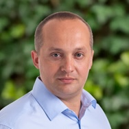

Patrik ŽákPoslanec mestskej časti Juh · druhý viceprimátor mesta Trenčín
Venujem sa mäkkým projektom, aktivitám s ľuďmi a občianskymi združeniami, projektu EHMK, propagácii mesta, mobilite a technológiám – všetkému, čo má zmysel pre rozvoj Trenčína.
Navštevoval som francúzske bilingválne Gymnázium Ľ. Štúra v Trenčíne a neskôr študoval na City University of Seattle v Trenčíne. Pracoval som v rodinnej firme a v medzinárodných spoločnostiach na pozíciach spojených s informačnými technológiami.
Od roku 2010 som poslancom pre mestskú časť Juh a od roku 2017 aj zástupcom primátora mesta Trenčín.
V práci sa venujem najmä mäkkým projektom, teda aktivitám priamo s ľuďmi a občianskymi združeniami, projektu EHMK, propagácii mesta, mobilite, technológiám a všetkému zmysluplnému pre rozvoj mesta.
Zaujímam sa o industriálny dizajn, fotografovanie, dopravu a urbanizmus. Keď mám voľný čas, vypĺňam ho záľubami ako sú podcasty, 3D tlač a domáce servery.
Doma ma tešia 2-ročný syn, 4-ročná dcéra, manželka a kocúr.